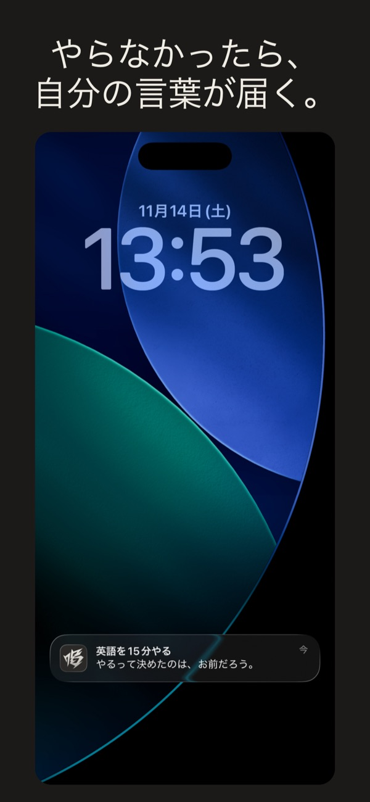
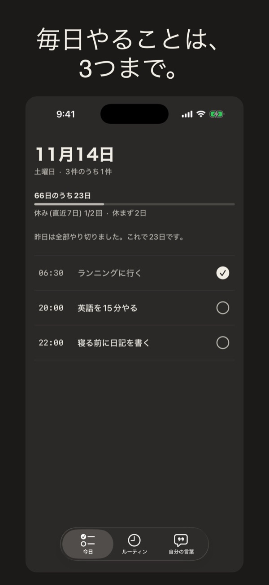

忘れている自分を、
いまに戻す一声。
決めた時刻を過ぎてもやっていないと、自分で書いた言葉が届きます。
App Store で見るiPhone 用・無料で使えます




しくみ
- 毎日やることを、時刻と一緒に3つまで決める
- 時刻を過ぎて忘れているときの自分に、言葉を書く
- 時刻を過ぎてもチェックが付いていないと、その言葉が届く
アプリは言葉を書きません。届くのは、自分が自分に書いた言葉だけです。
66日で卒業
全部やり切った日が66日になったら卒業です。ある研究では、習慣になるまでの日数の中央値が66日でした(人によって大きな差があります)。
休みは直近7日で2回まで。休んでも、それまでの日数はそのままです。
言葉は端末から出ません
書いた言葉は送信も解析もしません。アカウント登録もクラウドもありません。アプリを消すと、言葉も消えます。
無料と有料
ルーティン、チェック、通知、ウィジェット、卒業までは無料です。言葉も3つまで無料で、日替わりで届きます。
有料プランでは、言葉を4つ以上持てて、ルーティンごとに違う言葉を出せます。
App Store で「KATSU 習慣」でも見つかります